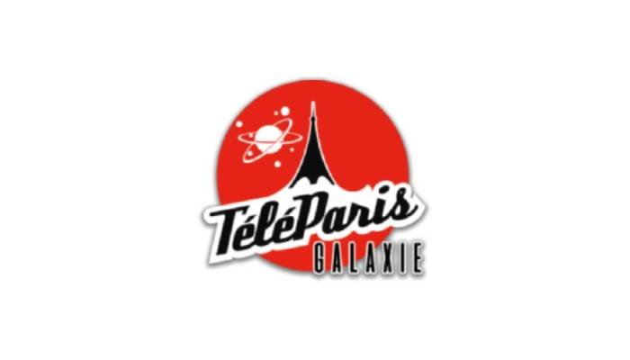

Le site web de mon entreprise en alternance. Un projet de site Wordpress avec un thème customisé adapté aux besoins de l'entreprise. Il a nécéssité un travail de gestion de catégories et d'articles important pour gérer la quantité importante de média et d'archives au cours des différentes années. Le site est aujourd'hui accesible sur l'adresse https://teleparis.fr
